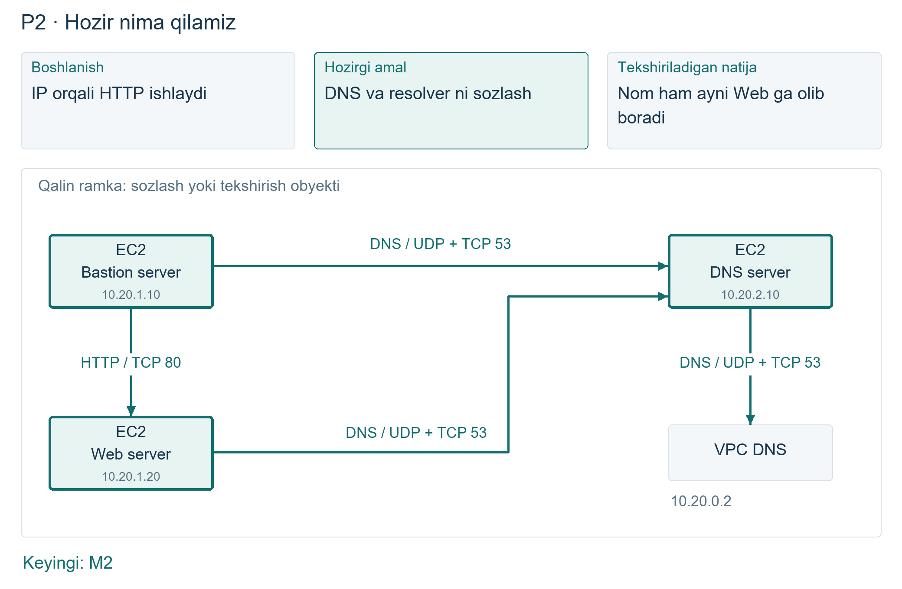

P2 Ichki DNS va odatiy nom yechimi
Avval: ulanish va qoidalar · Mashqlar P0–P6 · Topshiriqlar M0–M6 · Brauzerda tekshirish
2026-11-13 · D12 P/M r1.5
Tarqatma 2027-yil 31-yanvar oxirigacha amal qiladi (UZT).
Boshlashdan oldin
Ulanish va qoidalar bilan tanishing. Mos topshiriq: M2. Tekshiruv: brauzer yo‘riqnomasi.
Nimani o‘rganamiz
BIND zone, A record, ACL va client resolver ni ketma-ket sozlash.
Topshiriq
guide.lab.test → 10.20.1.20 va practice-db.lab.test → 10.20.2.20 ni sozlang; P1 HTTP ni nom orqali oching. Asosiy IP lar o‘zgarmaydi.
Topshiriq diagrammasi

Qalin ramka asosiy obyektni bildiradi. Har qadamdagi terminalda sozlang; strelkalar ulanish yoki tekshirish yo‘nalishidir. SG ruxsatlari boshlang‘ich tarqatmada tayyor; bu topshiriqda server ichini sozlaysiz.


| DNS name | A / IPv4 |
|---|---|
| guide.lab.test | 10.20.1.20 |
| practice-db.lab.test | 10.20.2.20 |
Bu qanday ishlaydi
Boshlashdan oldingi holat:
P1 HTTP IP orqali ishlaydi; DNS endi sozlanadi.
Ushbu P da nima o‘zgaradi:
BIND mashq nomlari bastion va Web ning oddiy resolver idan ishlaydi.
DNS nom so‘roviga javob beradi, Web sahifani qaytarmaydi. BIND lab.test zone ni boshqaradi; A record IPv4 qaytaradi. Aniq DNS server bilan dig va OS sozlamalaridan foydalanuvchi getent/browser ni farqlang. DNS dan keyin alohida HTTP ulanish bo‘ladi. BIND hujjati.
Yechim namunasi: bittadan bajaring
P2.1 BIND o‘rnatish va asl sozlamani saqlash
Bajarish joyi:
DNS serverning SSM terminali: ssm-user
Maqsad va amallar:
DNS ga kirib role=dns ni tekshiring. cp -a asl fayl atributlarini saqlaydi; -n eski nusxa ustiga yozmaydi. Bu tahrir xatosi uchun nusxa, DB backup/restore topshirig‘i emas.
Buyruqlar: raqamlar shu qadam ichidagi tartib
# 1. Ichki repo package ro‘yxatini yangilash; yuklash xatosini xato deb olish.
sudo apt-get update -o APT::Update::Error-Mode=any
# 2. Ichki repo dan bind9 bind9-utils ni tavsiya etilgan qo‘shimchalarsiz o‘rnatish.
sudo apt-get install --no-install-recommends bind9 bind9-utils
# 3. Asl fayldan nusxa olish; mavjud nusxani ustidan yozmaslik.
sudo cp -an /etc/bind/named.conf.options /etc/bind/named.conf.options.before-p2
# 4. Asl fayldan nusxa olish; mavjud nusxani ustidan yozmaslik.
sudo cp -an /etc/bind/named.conf.local /etc/bind/named.conf.local.before-p2
Buyruq va sozlamalar ma’nosi:
Named - BIND service nomi; named-checkconf kabi vositalar config ni tekshiradi. Cp -an dagi -n takroriy bajarishda mavjud zaxira nusxa ustiga yozmaydi.
Kutilgan natija va ma’nosi:
Ichki repo dan o‘rnatiladi. M2 da shu DNS ga record qo‘shilib, P2 record lari saqlanadi.
Ishlamasa:
Boshqa Lab named.conf faylini to‘liq ko‘chirmang. O‘zingizning zone mavjud bo‘lsa, avval o‘qing.
P2.2 Client lar va forwarder ni sozlash
Bajarish joyi:
DNS serverning SSM terminali: ssm-user
Maqsad va amallar:
sudo nano /etc/bind/named.conf.options ni ochib quyidagi matnni saqlang. acl ruxsatli client larni, listen-on DNS tinglashini belgilaydi; forward only tashqi nomlarni AWS DNS ga uzatadi. Query va recursion uchta manbaga cheklanadi. dnssec-validation no yopiq o‘quv forwarding tuzilmasiga mos.
Sozlama yoki ma’lumot: terminal buyrug‘i emas
acl "jdu_clients" { 127.0.0.1; 10.20.1.10; 10.20.1.20; };
options {
directory "/var/cache/bind";
listen-on { 127.0.0.1; 10.20.2.10; };
listen-on-v6 { none; };
allow-query { jdu_clients; };
allow-recursion { jdu_clients; };
allow-query-cache { jdu_clients; };
recursion yes;
forward only;
forwarders { 10.20.0.2; };
dnssec-validation no;
allow-transfer { none; };
};
Buyruq va sozlamalar ma’nosi:
Allow-query so‘rov yuboruvchi client ni, allow-recursion tashqi nom uchun recursive qidiruv client ini belgilaydi. Lab.test o‘z zone idan, tashqi nom forwarder orqali olinadi. Client lar bastion, Web va localhost bilan cheklangan.
Kutilgan natija va ma’nosi:
Bu shell buyrug‘i emas, fayl mazmuni. 10.20.0.2 - AWS resolver, 10.20.2.10 - o‘z BIND serveringiz.
Ishlamasa:
Nuqtali vergul va qavslar sintaksis qismidir. ACL ni any yoki 0.0.0.0/0 gacha kengaytirmang.
P2.3 Zone ni e’lon qilish va A record yozish
Bajarish joyi:
DNS serverning SSM terminali: ssm-user
Maqsad va amallar:
sudo nano /etc/bind/named.conf.local ga birinchi zone blokini yozing. sudo install -d -m 0755 /etc/bind/zones dan so‘ng sudo nano /etc/bind/zones/db.lab.test ga qolgan matnni yozing. SOA boshqaruv ma’lumoti, NS vakolatli DNS, A nom/IPv4 mosligi. Oxirgi nuqta to‘liq nomni bildiradi; har tahrirda serial ni oshiring.
Sozlama yoki ma’lumot: terminal buyrug‘i emas
// /etc/bind/named.conf.local
zone "lab.test" {
type primary;
file "/etc/bind/zones/db.lab.test";
allow-transfer { none; };
allow-update { none; };
};
; /etc/bind/zones/db.lab.test
$TTL 300
@ IN SOA dns.lab.test. hostmaster.lab.test. (
2026102301 3600 600 604800 300 )
@ IN NS dns.lab.test.
dns IN A 10.20.2.10
guide IN A 10.20.1.20
practice-db IN A 10.20.2.20
Buyruq va sozlamalar ma’nosi:
Zone e’loni va record lar alohida fayllarga saqlanadi. Guide nomi guide.lab.test gacha to‘ldiriladi; nuqtali dns.lab.test. to‘liq nomdir. TTL cache vaqtini, SOA serial esa zone versiyasini bildiradi, IP ni emas.
Kutilgan natija va ma’nosi:
Ikkita alohida faylga saqlang. dns A yozuvi NS nomining manzilidir. Client resolver ini hozircha o‘zgartirmang.
Ishlamasa:
M2 allaqachon mavjud bo‘lsa, zone ni almashtirmay ikkita mashq yozuvini qo‘shing. Zone ni ikki marta e’lon qilmang.
P2.4 Sintaksis va DNS ichki javobini tekshirish
Bajarish joyi:
DNS serverning SSM terminali: ssm-user
Maqsad va amallar:
Client ni nosoz DNS ga o‘tkazish nom yechimini to‘xtatadi. Avval named-checkconf va named-checkzone muvaffaqiyatli bo‘lsin, keyin UDP hamda TCP ni tekshiring.
Buyruqlar: raqamlar shu qadam ichidagi tartib
# 1. BIND config va ulangan zone sintaksisini tekshirish.
sudo named-checkconf -z
# 2. Lab.test zone faylini tekshirish.
sudo named-checkzone lab.test /etc/bind/zones/db.lab.test
# 3. named ni hozir yoqish va avtomatik start ni yoqish.
sudo systemctl enable --now named
# 4. named ni yangi sozlama bilan qayta ishga tushirish.
sudo systemctl restart named
# 5. UDP 53 orqali guide.lab.test ni so‘rab javobini o‘qish.
dig @127.0.0.1 guide.lab.test A
# 6. TCP 53 orqali guide.lab.test ni so‘rab javobini o‘qish.
dig @127.0.0.1 guide.lab.test A +tcp
Buyruq va sozlamalar ma’nosi:
Sintaksis tekshiruvi o‘tgach sozlamani qo‘llang. Dig dagi @ DNS serverni, A IPv4 record turini bildiradi. +tcp bilan TCP53 tekshiriladi; uni UDP muvaffaqiyatidan alohida o‘qing.
Kutilgan natija va ma’nosi:
zone loaded/OK, NOERROR, aa va A=10.20.1.20. aa shu zone uchun vakolatli javobni bildiradi.
Ishlamasa:
Xatoda sudo journalctl -u named -n 30 --no-pager ni o‘qing, sozlamani tuzatib yana tekshiring.
P2.5 Bastion va Web dan DNS ga bevosita so‘rov yuborish
Bajarish joyi:
Bastionning SSM terminali: ssm-user
Maqsad va amallar:
Buyruqlarni bastionda ham, Web da ham bajaring. @10.20.2.10 faqat shu so‘rov uchun DNS ni belgilaydi. Bu browser va app odatda shu DNS ni ishlatishini hali isbotlamaydi.
Buyruqlar: raqamlar shu qadam ichidagi tartib
# 1. UDP 53 orqali guide.lab.test ni so‘rab javobini o‘qish.
dig @10.20.2.10 guide.lab.test A
# 2. TCP 53 orqali practice-db.lab.test ni so‘rab javobini o‘qish.
dig @10.20.2.10 practice-db.lab.test A +tcp
# 3. UDP 53 orqali absent-p2.lab.test ni so‘rab javobini o‘qish.
dig @10.20.2.10 absent-p2.lab.test A
# 4. UDP 53 orqali aws.amazon.com ni so‘rab javobini o‘qish.
dig @10.20.2.10 aws.amazon.com A
# 5. Butun zone uchun AXFR so‘rab aniq rad etilishini tekshirish.
dig @10.20.2.10 lab.test AXFR
Buyruq va sozlamalar ma’nosi:
Mavjud ichki nom, yo‘q nom, tashqi nom va zone transfer ni alohida sinang. NXDOMAIN to‘g‘ri manfiy javob, timeout emas. AXFR butun zone ni so‘raydi; bu Lab da rad etilishi kerak.
Kutilgan natija va ma’nosi:
Kerakli nomlar to‘g‘ri A qaytaradi; absent-p2 vakolatli NXDOMAIN, tashqi nom javob beradi; AXFR rad qilinadi. Timeout aniq rad etish isboti emas.
Ishlamasa:
Ulanmasa, manba hamda UDP/TCP 53 ni ajratib tekshiring. Boshqa private serverlarni client ACL ga qo‘shmang.
P2.6 Odatiy resolver ni faqat BIND ga yo‘naltirish
Bajarish joyi:
Bastionning SSM terminali: ssm-user
Maqsad va amallar:
Bastion va Web da bittadan bajaring. ip -br link orqali interface nomini, networkctl status NOM orqali Network File ni aniqlang. ls /etc/netplan bilan YAML ni topib sudo cp -an orqali nusxa saqlang. sudo nano da ayni interface ga dhcp4-overrides/use-dns:false va nameservers qo‘shing. Quyida tuzilma namunasi: interface nomi hamda mavjud match/set-name/renderer qiymatlarini saqlang.
Sozlama yoki ma’lumot: terminal buyrug‘i emas
network:
version: 2
ethernets:
ens5:
dhcp4: true
dhcp4-overrides:
use-dns: false
nameservers:
addresses: [10.20.2.10]
Buyruq va sozlamalar ma’nosi:
Bu Netplan DNS serverga emas, client bo‘lgan bastion va Web ga yoziladi. Dhcp4 IP olishni davom ettiradi; use-dns: false DHCP DNS ni olishni to‘xtatadi. Addresses dagi DNS manzili EC2 ning o‘z IP si emas.
Kutilgan natija va ma’nosi:
IP va gateway DHCP da qoladi. Boshqa fallback DNS qo‘shmang, /etc/resolv.conf ni almashtirmang, topshiriq nomlarini /etc/hosts ga yozmang. SSM oynasini ochiq qoldiring.
Ishlamasa:
Bir interface bir necha YAML da bo‘lsa, qiymatlar birlashadi. resolvectl dns da AWS DNS qolsa, tegishli barcha YAML va amaldagi sozlamani tekshiring.
P2.7 Qo‘llagach odatiy resolver va HTTP ni tekshirish
Bajarish joyi:
Bastionning SSM terminali: ssm-user
Maqsad va amallar:
Bastion va Web da avval sozlamani hosil qiling, keyin qo‘llang va tekshiring. Ikkinchi SSH/RDP oynasini ochiq tuting; uzilsa SSM orqali qaytib nusxa bilan solishtiring. Fayl tekshirilgach va generate muvaffaqiyatli tugagach apply qiling.
Buyruqlar: raqamlar shu qadam ichidagi tartib
# 1. Netplan YAML dan config yaratib, qo‘llashdan oldin sintaksisni tekshirish.
sudo netplan generate
# 2. Saqlangan netplan sozlamasini tarmoqqa qo‘llash.
sudo netplan apply
# 3. systemd-resolved ni yangi sozlama bilan qayta ishga tushirish.
sudo systemctl restart systemd-resolved
# 4. Odatiy resolver ishlatadigan DNS serverlarni ko‘rsatish.
resolvectl dns
# 5. Odatiy resolver orqali guide.lab.test IPv4 sini olish.
getent ahostsv4 guide.lab.test
# 6. Odatiy resolver orqali practice-db.lab.test IPv4 sini olish.
getent ahostsv4 practice-db.lab.test
# 7. http://guide.lab.test/practice.txt ga HTTP yuborib status, header va matnni ko‘rsatish.
curl --noproxy '*' -i http://guide.lab.test/practice.txt
Buyruq va sozlamalar ma’nosi:
Netplan generate config hosil qiladi; apply qo‘llaydi. SSM uzilsa ayni instance ga qayta ulaning. Resolvectl tanlangan DNS ni ko‘rsatadi; getent OS ning oddiy yo‘lini ishlatadi; oxirida nom bilan HTTP tekshiriladi.
Kutilgan natija va ma’nosi:
Yagona upstream DNS 10.20.2.10. getent kerakli IP, HTTP esa 200 va P1 matnini beradi. 127.0.0.53 mahalliy stub; upstream ni resolvectl da ko‘ring.
Ishlamasa:
dig o‘tib getent o‘tmasa, client resolver ini tekshiring. Firefox dagi DoH o‘chirilgan sozlamani saqlang.
P2.8 Browser da IP va nomni solishtirib yuborish
Bajarish joyi:
RDP orqali bastiondagi Firefox
Maqsad va amallar:
RDP orqali bastion Firefox ini oching. http://10.20.1.20/practice.txt va http://guide.lab.test/practice.txt bir xil matn berishini ko‘ring. lab.test maktab PC DNS ida emas, bastion ichki DNS ida ishlaydi. Keyin PC dagi Web Portal da P2 ni tekshiring.
Buyruq va sozlamalar ma’nosi:
Bastion Firefox i ichki guide.lab.test nomini ishlatadi. Windows browser i ayni ichki DNS ga sozlanmagan. IP va nom orqali ko‘rinishni solishtirib, yuborishdan oldin ayni P1 fayl ekanini tekshiring.
Kutilgan natija va ma’nosi:
13 ta mashq tekshiruvi; P1 ning joriy ishlashi ham kerak. DB/app dan oldin M2 da oltita asosiy nomni qo‘shing.
Ishlamasa:
Nom ochilmasa darhol HTTP to‘xtagan demang: IP → dig → getent → HTTP tartibida solishtiring.
Natijani o‘qish namunasi (kiritmang)
status: NOERROR
guide.lab.test. 300 IN A 10.20.1.20
Dig ning qisqa namunasi: A dan keyin IPv4, 300 esa TTL. So‘rov SERVER i 10.20.2.10 ekanini alohida tekshiring.
Tushunishni tekshirish (ballsiz)
dig @10.20.2.10 ishlaydi, getent ishlamaydi. Muammo albatta zone dami?
Izoh:
Yo‘q. Aniq tanlangan DNS bilan OS ning oddiy resolver i farq qilishi mumkin. Netplan va resolvectl ning amaldagi sozlamalarini tekshiring.